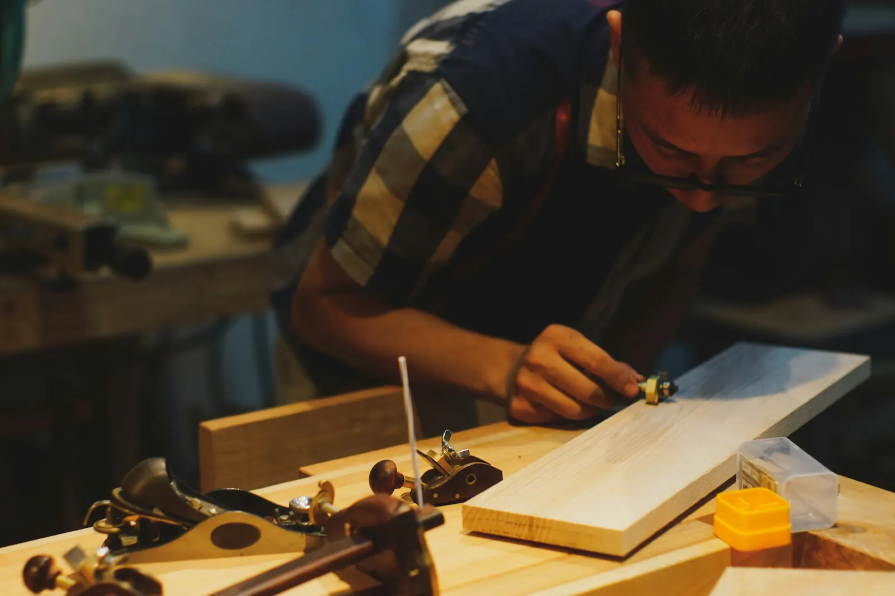

Ein Meisterbetrieb seit 1936
Raumausstattung Schiefer ist ein Konstanzer Meisterbetrieb, der als Polsterer-, Tapezierer- und Sattlerbetrieb gegründet wurde und bis heute Handwerk mit technischer Kompetenz verbindet.
Warum wir tun, was wir tun
Raumausstattung Schiefer bewahrt und erneuert Räume, Möbel, Fahrzeuge und Böden durch langlebiges Meisterhandwerk, individuelle Materialberatung und technische Lösungen, die weit über den Austausch fertiger Standardprodukte hinausgehen.
Als Familien- und Meisterbetrieb verbinden wir traditionelle Handarbeit mit moderner Boden- und Sanierungstechnik – von der Gardine im Wohnzimmer bis zur Sanierung eines Industriebodens bei laufendem Betrieb.

Von 1936 bis heute
- 1936Gründung als Polsterer-, Tapezierer- und Sattlerbetrieb in Konstanz.
- FamilienbetriebBis heute als Familien- und Meisterbetrieb geführt.
- Erweiterung des AngebotsAusbau um Parkett, Designbodenbeläge und technisch anspruchsvolle Bodensanierung.
- HeuteVier Leistungsbereiche – Raum, Boden, Möbel, Fahrzeug – unter einem Dach, geführt von Matthias Schiefer.
Matthias Schiefer
Raumausstattermeister und öffentlich geführter Ansprechpartner des Betriebs.
Lernen Sie uns persönlich kennen
Vereinbaren Sie ein Beratungsgespräch in unserer Werkstatt in Konstanz.
Beratung anfragen